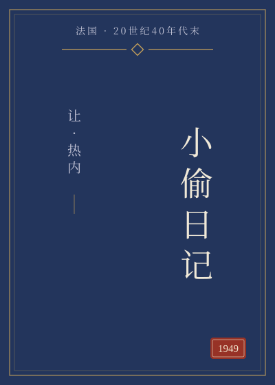
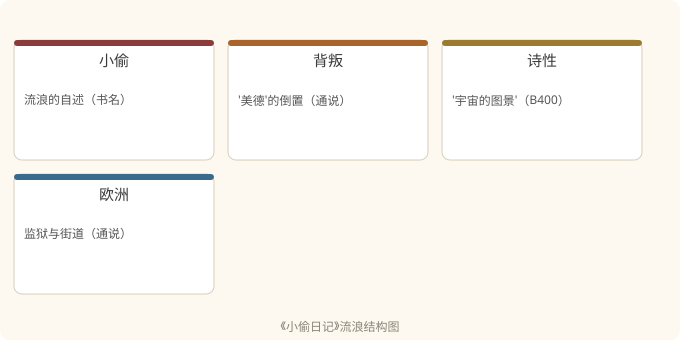

小偷日记
一、基本信息
| 作者 | 让·热内 |
|---|---|
| 成书/出版 | 1949年（Britannica B400：Journal du voleur (1949; The Thief's Journal)） Jean Genet — Encyclopaedia Britannica（百科全书） |
| 国别/地区 | 法国 |
| 时代 | 近代 · 20世纪40年代末 |
| 体裁 | 自传性小说 |
| 语言 | 法语 |

《小偷日记》流浪结构图（主题·结构图）
二、创作背景
Britannica（B400）：Journal du voleur——'The Thief's Journal'——作品列表。
Britannica（B400）：热内——'transformed erotic and often obscene subject matter into a poetic vision of the universe'。
题材（通说待核）：流浪欧洲的'小偷'自述——背叛作为'美德'。
三、内容脉络
（通说待核）西班牙/比利时的流浪：监狱、乞讨与'背叛'。
（通说待核）'物品'的圣化（通说待核）。
四、主要人物表
| 人物 | 身份 | 说明 |
|---|---|---|
| 热内（'我'） | 小偷/流浪者 | （B400 语境） |
五、主题与艺术特点
- '背叛'的美学（通说待核）。
- '情色题材的诗性宇宙'（B400）。
- '预先赦免'的自白（B400：pardoned in advance 交叉）。
六、影响与评论
- Britannica：Journal du voleur (1949)（B400）。
Jean Genet — Encyclopaedia Britannica（百科全书） - Britannica：'poetic vision of the universe'（B400）。
Jean Genet — Encyclopaedia Britannica（百科全书）
七、阅读建议
难点
- '自传'的虚构性。
- '背叛'的伦理倒置。
- 《小偷日记》中译本（人民文学等——通说待核）。
- 法文原版。
热内自传篇；与《鲜花圣母》对读。
八、待核实
- 流浪路线核对（通说）。
- 1949年出版（Gallimard说）待核。
- '背叛'段落细节待核。